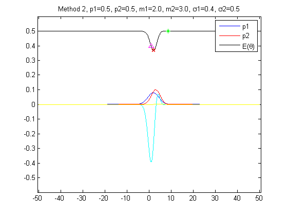

Demo illustrating the fine_threshold option of the FastHaarAdaboost
Contents
training algorithm (see fast_haar_adaboost_binary_train_cascade.c and
fast_haar_ada_weaklearner.c)
p1 = 0.5;
p2 = 0.5;
m1 = 2;
m2 = 3;
s1 = (2.5)^2;
s2 = (2)^2;
if(m1 > m2)
d = (m1 - m2)/sqrt((s1 + s2)/2);
else
d = (m2 - m1)/sqrt((s1 + s2)/2);
end
method = 2;
if(method == 1)
a1 = p1./sqrt(2*pi*s1);
a2 = p2./sqrt(2*pi*s2);
invs1 = 1./s1;
invs2 = 1./s2;
temp1 = m1.*invs1;
temp2 = m2.*invs2;
A = (m1.* temp1) - (m2.* temp2);
B = -2*(temp1 - temp2);
C = invs1 - invs2 + 2*(log(a2/a1));
delta = B.*B - 4*A.*C;
if(delta < 0)
delta = -delta;
end
sqrtdelta = sqrt(delta);
if(A ~= 0)
x1 = (-B + sqrtdelta)./(2*A);
x2 = (-B - sqrtdelta)./(2*A);
else
x1 = -B/(2*A);
x2 = x1;
end
else
cte = p1/p2;
alpha = s1 - s2;
beta = (m1.*s2 - m2.*s1);
gamma = (m2*m2).*s1 - (m1*m1).*s2 + 2*s1*s2.*log(cte.*(s2/s1));
delta = beta.*beta - alpha.*gamma;
if(delta < 0)
delta = -delta;
end
sqrtdelta = sqrt(delta);
if(alpha ~= 0)
x1 = (-beta + sqrtdelta)./(alpha);
x2 = (-beta - sqrtdelta)./(alpha);
else
x1 = -gamma/beta;
T = (m1 + m2)/2 + (sqrt(s1)/(m1 - m2))*log(cte);
x2 = x1;
end
end
sqrts1 = 1/sqrt(s1);
sqrts2 = 1/sqrt(s2);
x = (-50:0.005:50);
cost_fcn = @(y,p1,p2,m1,m2,sqrts1,sqrts2) (0.5 * (1 + p1*(erf((y-m1)*sqrts1)) - p2*(erf((y-m2)*sqrts2)) ));
if(m1 > m2)
Err = cost_fcn(x,p1,p2,m1,m2,sqrts1,sqrts2);
dErr = sqrt(1/pi).*(p1*exp(-(((x-m1).^2)./s1))/sqrts1 - p2*exp(-(((x-m2).^2)./s2))/sqrts2);
Errx1 = cost_fcn(x1,p1,p2,m1,m2,sqrts1,sqrts2);
Errx2 = cost_fcn(x2,p1,p2,m1,m2,sqrts1,sqrts2);
else
Err = cost_fcn(x,p2,p1,m2,m1,sqrts2,sqrts1);
dErr = sqrt(1/pi).*(p2*exp(-(((x-m2).^2)./s2))/sqrts2 - p1*exp(-(((x-m1).^2)./s1))/sqrts1);
Errx1 = cost_fcn(x1,p2,p1,m2,m1,sqrts2,sqrts1);
Errx2 = cost_fcn(x2,p2,p1,m2,m1,sqrts2,sqrts1);
end
if(m1 > m2)
Errx = cost_fcn(x1,p1,p2,m1,m2,sqrts1,sqrts2);
[xnew , Errxnew , func_evals ] = neldermead_error_fcn(cost_fcn,x1,p1,p2,m1,m2,sqrts1,sqrts2);
else
Errx = cost_fcn(x2,p2,p1,m2,m1,sqrts2,sqrts1);
[xnew , Errxnew , func_evals ] = neldermead_error_fcn(cost_fcn,x2,p2,p1,m2,m1,sqrts2,sqrts1);
end
dErr1 = diff(Err);
[Errx , Errxnew]
if(method == 1)
figure(1)
plot(x , p1*normpdf(x , m1 , 1/sqrts1) , x , p2*normpdf(x , m2 , 1/sqrts2) , 'r' , x , Err , 'k' , x , dErr , 'c' , x1 , Errx1 , 'g*' , x2 , Errx2 , 'm^' , xnew , Errxnew , 'rp' )
title(sprintf('Method 1, p1=%2.1f, p2=%2.1f, m1=%2.1f, m2=%2.1f, \\sigma1=%2.1f, \\sigma2=%2.1f' , p1,p2,m1,m2,sqrt(s1),sqrt(s2)))
legend('p1','p2','E(\theta)')
else
figure(2)
plot(x , p1*normpdf(x , m1 , 1/sqrts1) , x , p2*normpdf(x , m2 , 1/sqrts2) , 'r' , x , Err , 'k', x , dErr , 'c' , x1 , Errx1 , 'g*' , x2 , Errx2 , 'm^' , xnew , Errxnew , 'rp')
title(sprintf('Method 2, p1=%2.1f, p2=%2.1f, m1=%2.1f, m2=%2.1f, \\sigma1=%2.1f, \\sigma2=%2.1f' , p1,p2,m1,m2,sqrts1,sqrts2))
legend('p1','p2','E(\theta)')
figure(2)
plot(x , p1*normpdf(x , m1 , 1/sqrts1) , x , p2*normpdf(x , m2 , 1/sqrts2) , 'r' , x , Err , 'k', x , dErr , 'c' , x , [0 , dErr1] , 'y', x1 , Errx1 , 'g*' , x2 , Errx2 , 'm^' , xnew , Errxnew , 'rp')
title(sprintf('Method 2, p1=%2.1f, p2=%2.1f, m1=%2.1f, m2=%2.1f, \\sigma1=%2.1f, \\sigma2=%2.1f' , p1,p2,m1,m2,sqrts1,sqrts2))
legend('p1','p2','E(\theta)')
end
axis([min(x)-0.5 , max(x)+0.5 , -0.6 , 0.6])
ans =
0.3999 0.3698
